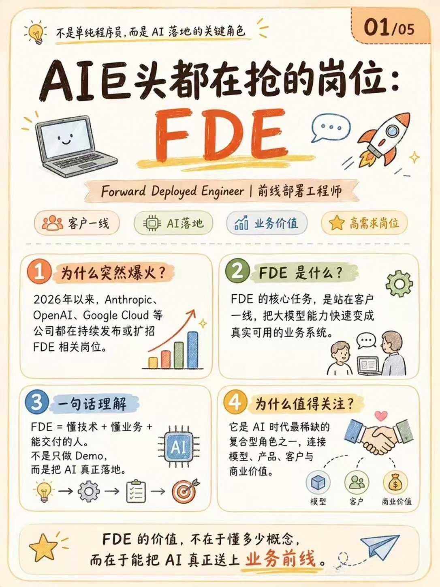
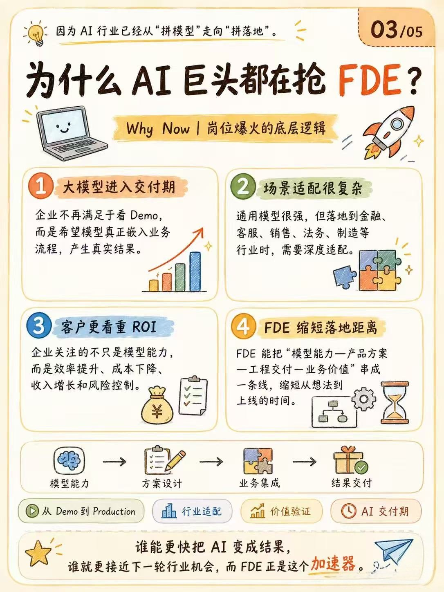
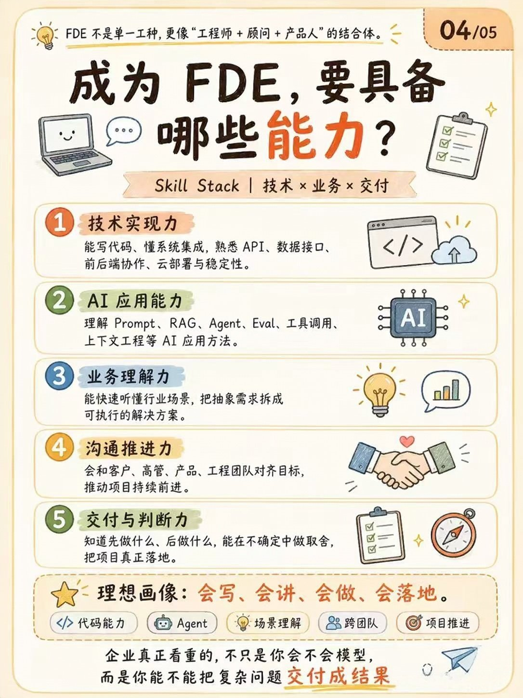
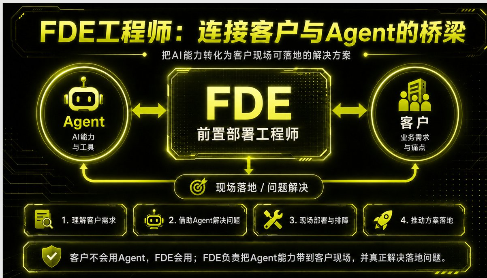
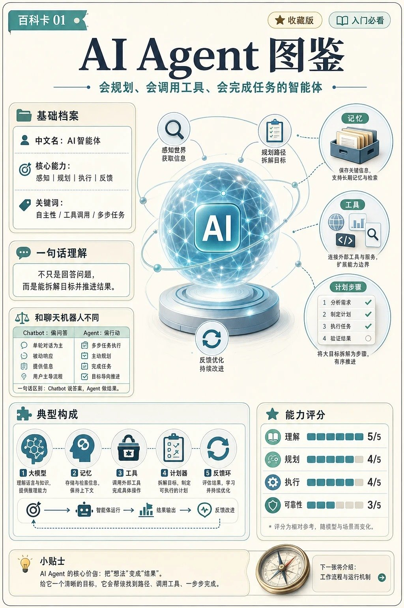
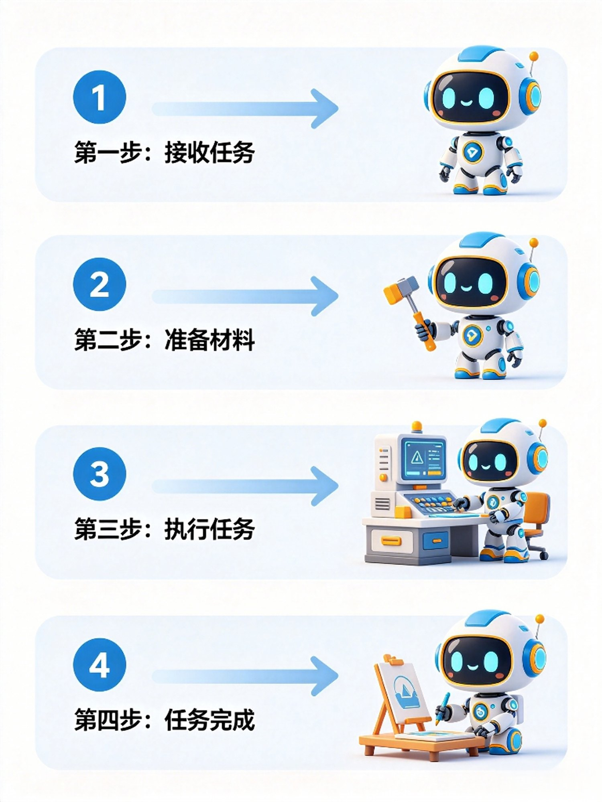
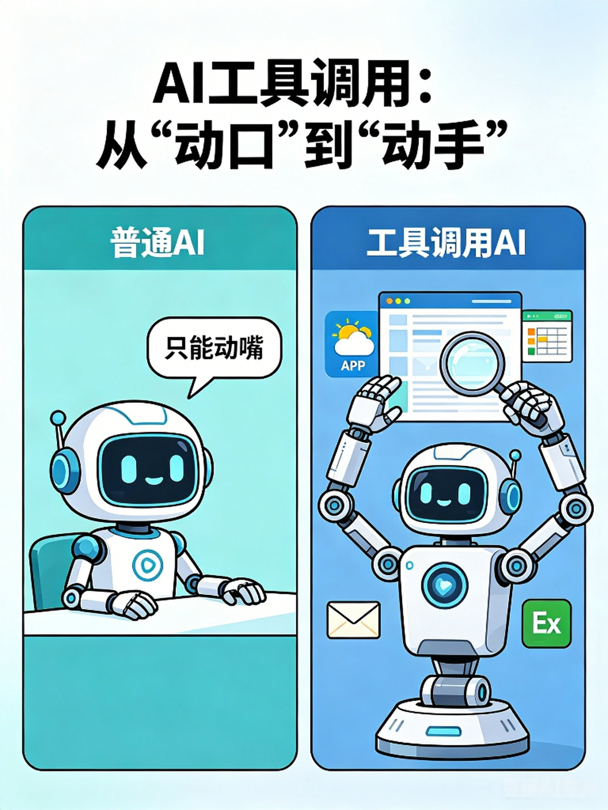
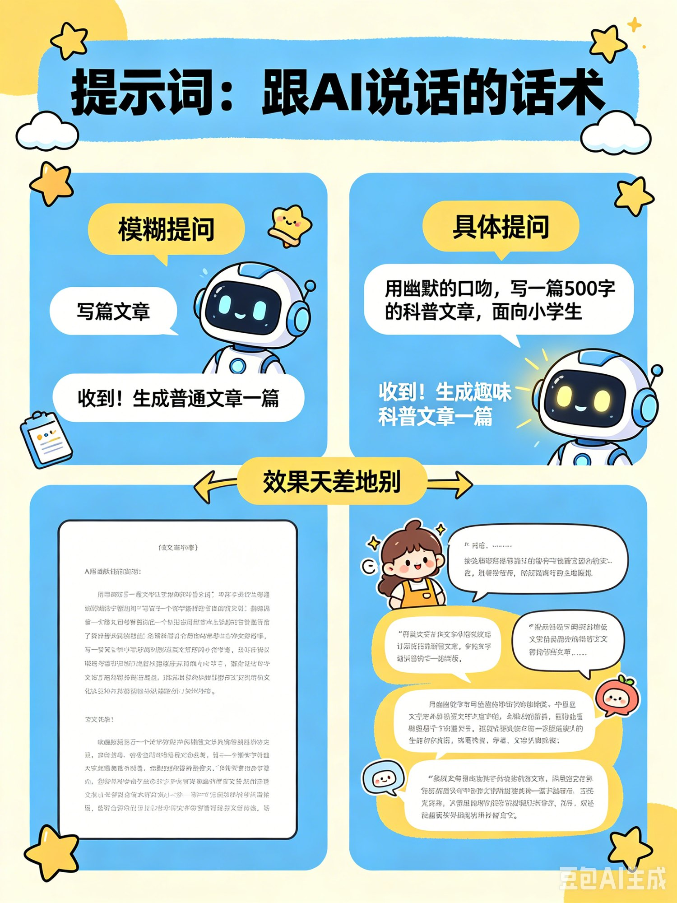

FDE 是我们对"AI 时代最抢手应用人才"的称呼，它真正培养的核心能力，是用 AI 智能体把想法变成能跑的系统。
AI 是经济缓行中罕见的逆势增长赛道，增速远超宏观经济，正处于爆发前夜。
打破产能瓶颈，一个人就能交付过去一个团队才能完成的工作量。
理解 Agent 逻辑 / 跑通首个自动化工作流
基础岗位 / 拥有独立项目作品集
高薪岗位 / 企业级 Agent 架构与商业变现能力




大模型 / Agent / MCP / 工作流……这些词到底什么关系？



